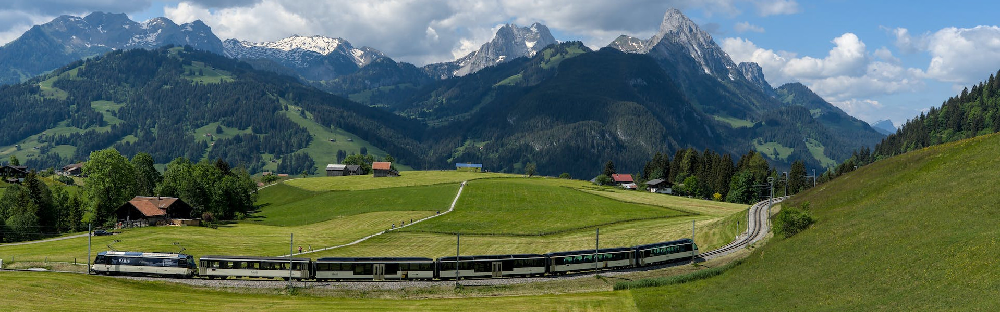

Sobre a Suíça
A Suíça é um país maravilhoso para se visitar, com uma rica diversidade cultural, paisagens deslumbrantes e uma variedade de atrações turísticas. A Suíça é conhecida por sua diversidade cultural e linguística, com quatro idiomas oficiais: alemão, francês, italiano e romanche. O país é famoso por seus relógios de alta qualidade, chocolates deliciosos e belas montanhas alpinas.
Lugares para Visitar
- Matterhorn: Este é um dos picos mais altos dos Alpes e um símbolo da Suíça. A primeira vez que você vê o Matterhorn é inesquecível.
- Jungfraujoch: Conhecida como a "Topo da Europa", é a estação de trem mais alta da Europa e oferece vistas deslumbrantes.
- Parque Nacional Suíço: Este é o único parque nacional da Suíça e é conhecido por sua beleza natural.
- Château de Chillon: Este castelo à beira do lago em Montreux é uma das atrações mais populares da Suíça.
- Cidades: Zurique, a maior cidade da Suíça, é conhecida por suas lojas, museus e vida noturna. Genebra é o lar de quatro escritórios principais das Nações Unidas e tem uma grande população internacional.
Dicas de Viagem
- A Suíça tem um excelente sistema de transporte público que inclui trens, ônibus, balsas de rios e lagos, funiculares e teleféricos.
- A culinária suíça é famosa por seus pratos de queijo, como fondue e raclette.
- A Suíça é um destino de quatro estações, com esportes de neve no inverno e caminhadas, ciclismo e parapente no verão.